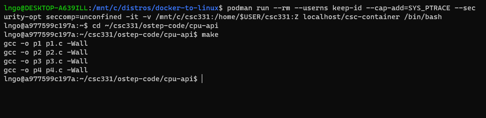
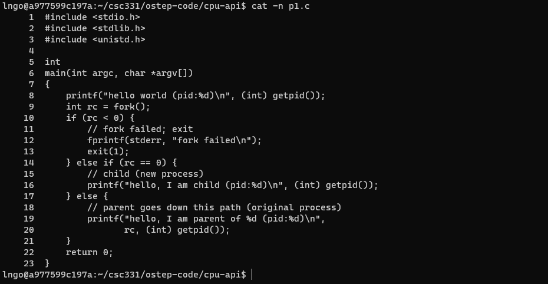
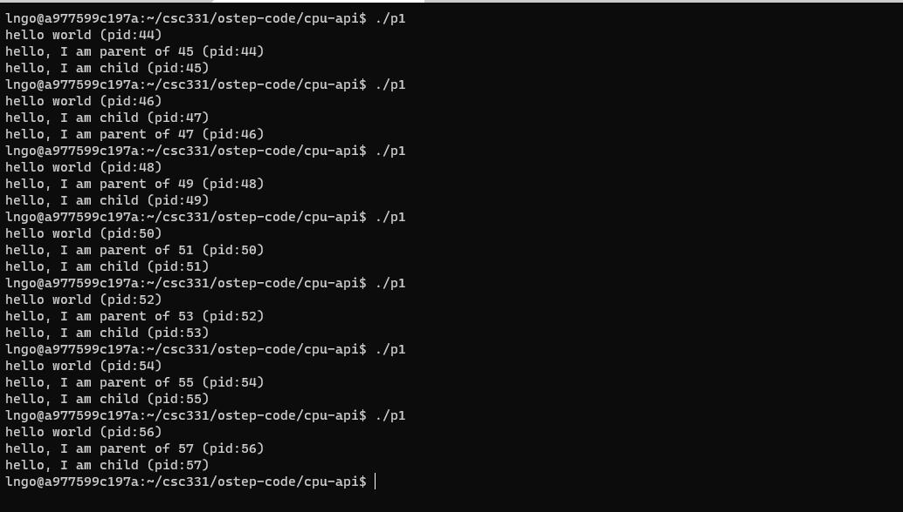
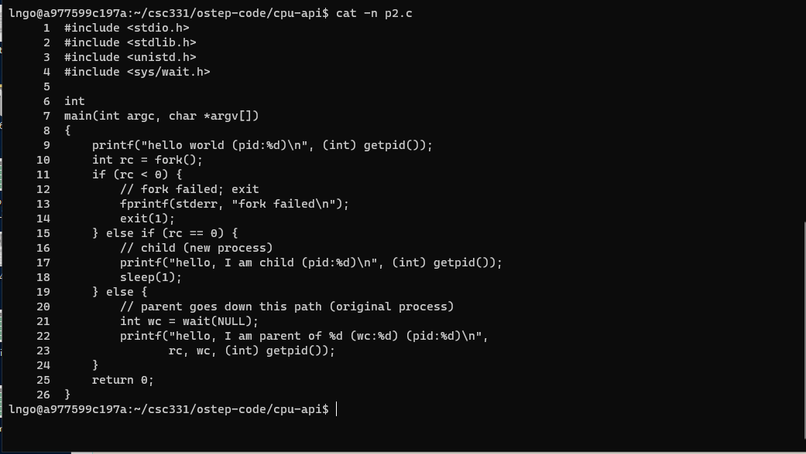
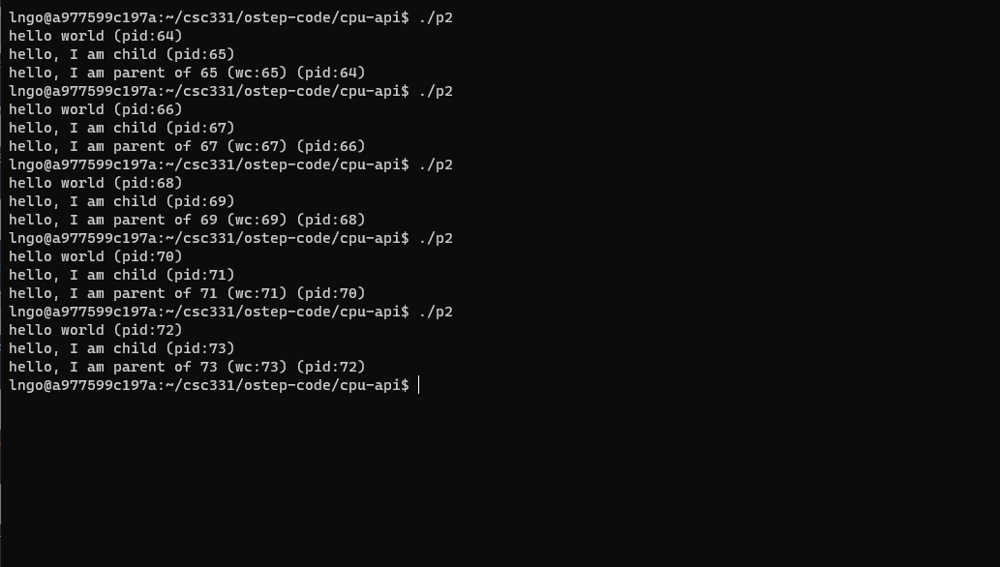
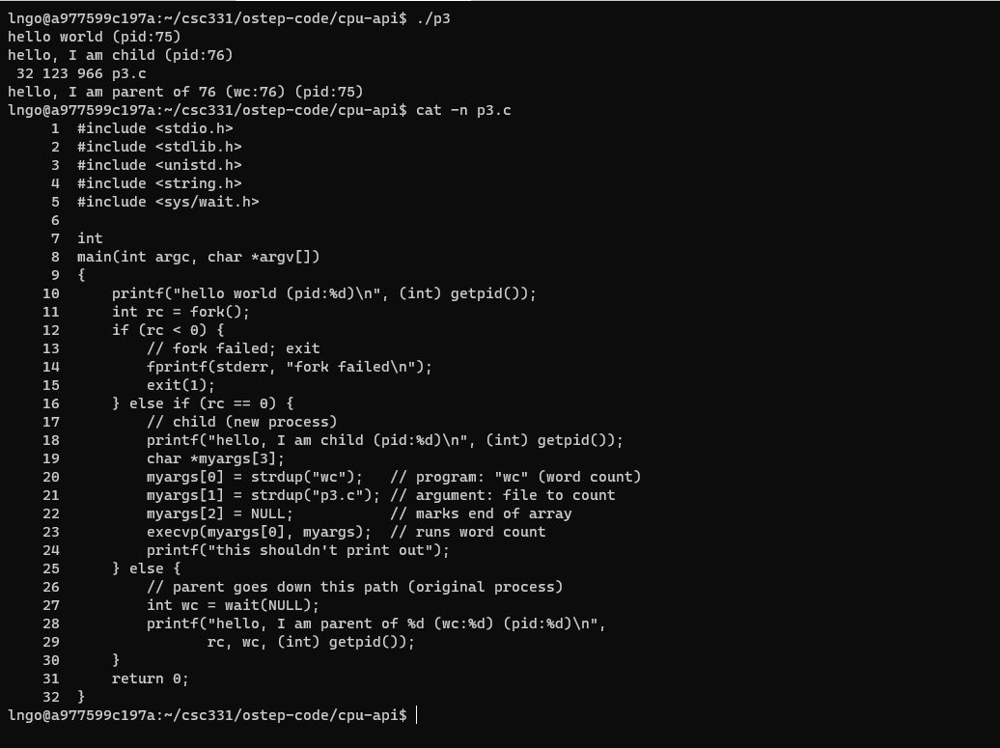
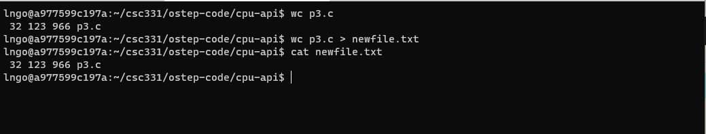
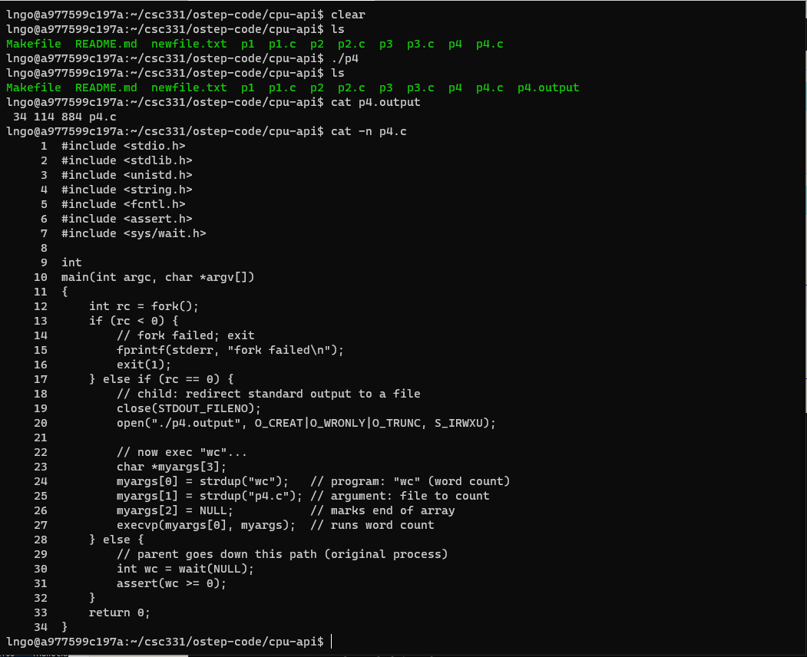
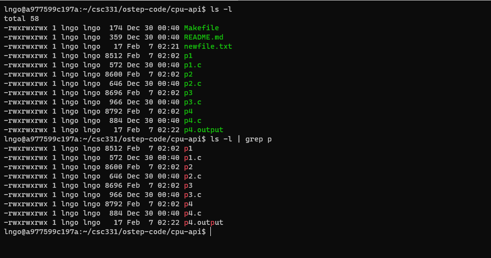

Process API#
1. Process API#
Include three function calls:
fork()
exec()
wait()
2. fork()#
… is a system call.
… is used to create a new process.
Some important points:
fork() creates a new process by duplicating the calling process. The new process is referred to as the child process. The calling proces is referred to as the parent process.
The child process and the parent process run in separate memory spaces. At the time of fork() both memory spaces have the same content.
The child process is an exact duplicate of the parent process except for the following points:
The child has its own unique process ID, and this PID does not match the ID of any existing process group (setpgid(2)) or session.
The child’s parent process ID is the same as the parent’s process ID.
The child does not inherit outstanding asynchronous I/O operations from its parent (aio_read(3), aio_write(3)), nor does it inherit any asynchronous I/O contexts from its parent (see io_setup(2)).
The child inherits copies of the parent’s set of open file descriptors. Each file descriptor in the child refers to the same open file description (see open(2)) as the corresponding file descriptor in the parent. This means that the two file descriptors share open file status flags, file offset, and signal-driven I/O attributes.
3. Hands-on: Getting started#
Open a terminal (Windows Terminal or Mac Terminal).
$ docker run --rm --userns=host --cap-add=SYS_PTRACE --security-opt seccomp=unconfined -it linhbngo/csc-container /bin/bash
Navigate to
/home/$USER/csc331Change to directory
ostep-code/cpu-api, then runmaketo build the programs.
$ cd ~/csc331/ostep-code/cpu-api
$ make

4. Hands-on: process creation using fork()#
$ cat -n p1.c

Line 5-6: No idea why the author sets up the source code that way …
Line 8: prints out hello world and the process identifier (pid) of the current process.
Line 9: calls
fork(), which initiate the creation of a new process. The return of this fuction call is assigned to variablerc.Line 10: If
rcis negative, the function call failed and the program exits with return value 1. This line is evaluated within the parent process (since the child process creation failed).Line 14: If
rcis non-negativeThe
forkcall is successful, and you now have two process.The new process is an almost exact copy of the calling process.
The new process does not start at
main(), but begins immediately afterfork().
The value of
rcdiffers in each process.The value of
rcin the new process is0.The value of
rcin the parent process is non-zero and actually is thepidof the new process.
Line 16 and line 19 confirms the above point by having the child process prints out its own process ID and the parent process prints out the
rcvalue. These two values should be the same.
5. Hands-on: run p1#
Run
p1several times.What do you notice? - also see my screenshot

6. wait()/waitpid()/waitid()#
… belongs to a family of system calls.
… are used to make a process to wait for its child process.
Some important points:
What are we waiting for? state changes.
The child process was stopped by a signal.
The child process terminated.
The child process was resumed by a signal.
wait(): suspends execution of the calling thread until one of its child processes terminates.
7. Hands-on: processes management using wait()#
$ cat -n p2.c

Line 1-4: Pay attention to the libraries included.
Line 6-7: No idea why the author sets up the source code that way …
Line 9: prints out hello world and the process identifier (pid) of the current process.
Line 10: calls
fork(), which initiate the creation of a new process. The return of this fuction call is assigned to variablerc.Line 11: If
rcis negative, the function call failed and the program exits with return value 1. This line is evaluated within the parent process (since the child process creation failed).Line 15: If
rcis equal to0.The child process will execute the codes inside this conditional block.
Line 17: prints out a statement and the child’s
pid.Line 18: sleeps for one second.
Line 19: This is the parent process (
rcis non-negative and not equal to 0)Line 21: calls the
wait()function.Line 22: prints out the information of the parent process.
8. Hands-on: run p2#
Run p2 several times.
What do you notice about the runs?

9. exec()#
fork()lets you create and run a copy of the original process.exec()lets you run a different process in place of the copy of the original process.
10. Hands-on: processes management using exec()#
$ ./p3
$ cat -n p3.c

Line 1-5: Pay attention to the libraries included.
Line 7-8:
mainLine 10: prints out hello world and the process identifier (pid) of the current process.
Line 11: calls
fork(), which initiate the creation of a new process. The return of this fuction call is assigned to variablerc.Line 12: If
rcis negative, the function call failed and the program exits with return value 1. This line is evaluated within the parent process (since the child process creation failed).Line 16: If
rcis equal to0.The child process will execute the codes inside this conditional block.
Line 18: prints out a statement and the child’s
pid.Line 19-22: sets up parameters for a shell command (
wcin this case).Line 23:
execreplaces the current child process with a completely new process to execute thewccommand.Line 24: This line’s code is contained in the current child process, but was wiped out when
execreplaces the current child process with the new process forwc.
Line 25: This is the parent process (
rcis non-negative and not equal to 0)Line 27: calls the
wait()function.Line 28: prints out the information of the parent process.
11. Why fork(), wait(), and exec()?#
The separation of
fork()andexec()is essential to the building of a Linux shell.It lets the shell runs code after the call to
fork(), but before the call toexec().This facilitates a number of interesting features in the UNIX shell.
12. The Shell#
What is the UNIX shell?.
In Unix, the shell is a program that interprets commands and acts as an intermediary between the user and the inner workings of the operating system. Providing a command-line interface (that is, the shell prompt or command prompt), the shell is analogous to DOS and serves a purpose similar to graphical interfaces like Windows, Mac, and the X Window System.
13. The Shell#
What is the UNIX shell?.
In Unix, the shell is a program …
The Shell#
In Unix, the shell is a program …
Therefore, the running shell is a process.
In other words, inside a running shell, if we want to run another program, we are essentially asking a process (the running shell) to create and run another process.
14. When you run a program from the shell prompt …#
The shell will
find out where the program is in the file system.
call
fork()to create a new child process (to run the program).call one of the
exec()family functions in the scope of this child process to actually load and run this program.call
wait()to wait for the child process to finish (now with new process content) before giving user the shell prompt again.
15. When you run a program from the shell prompt …#
The shell will
find out where the program is in the file system.
call
fork()to create a new child process (to run the program).call one of the
exec()family functions in the scope of this child process to actually load and run this program.call
wait()to wait for the child process to finish (now with new process content) before giving user the shell prompt again.
16. Hands-on 7: redirection#
$ wc p3.c
$ wc p3.c > newfile.txt
$ cat newfile.txt

The shell …
finds out where
wcis in the file system.prepares
p3as in input towc.calls
fork()to create a new child process to run the command.recognizes that `` represents a redirection, thus closes the file descriptor to standard output and replaces it with a file descriptor to newfile.txt.
calls one of exec() family to run wc p3.c.
output of wc p3.c are now send to newfile.txt.
calls wait() to wait for the child process to finish before giving user the prompt again.
17. Hands-on 8: more on file descriptors#
$ ls
$ ./p4
$ ls
$ cat p4.output
$ cat -n p4.c

wc p4should have printed out to terminal.close(STDOUT_FILENO)closes the file descriptor that writes to the terminal (hence free up that particular file descriptor ID).open(“./p4.output”, …)creates a file descriptor for the p4.output file, but since the file descriptor ID for the terminal is now free, this file descriptor is assigned to p4.output.As
wc p4is executed and attempts to write to terminal, it actually writes to p4.output instead.
Hands-on 9: piping#
$ ls -l
$ ls -l | grep p

Other system calls …#
kill(): send signals to a process, including directive to pause, die, and other imperatives.SIGINT: signal to terminate a process
SIGTSTP: pause the process (can be resumed later).
signal(): to catch a signal.